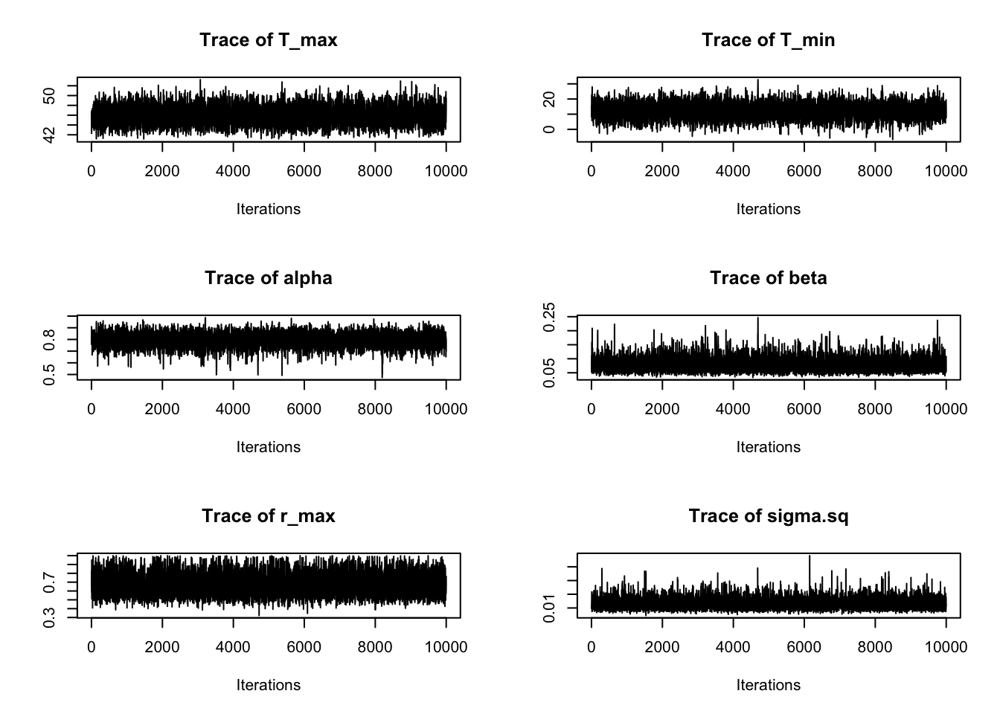
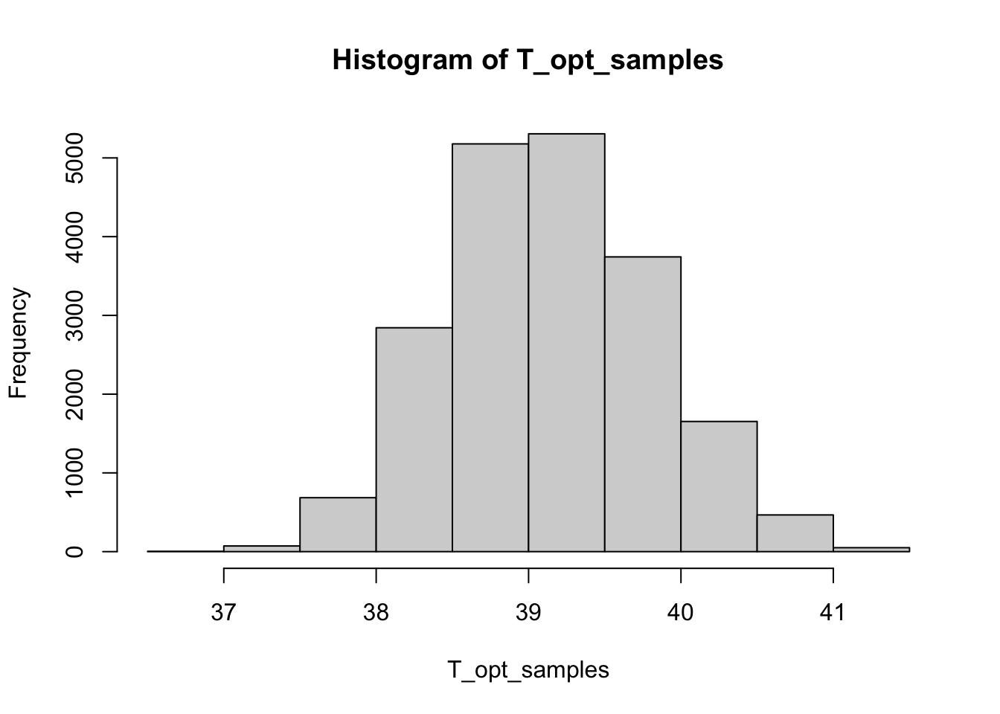

In this section, we will see how to use a custom functional form for thermal performance curves that is not currently implemented in bayesTPC. We will also see how to process the output from bayesTPC to generate custom plots or get the posterior distribution of model parameters.
Thermal performance curves under antibiotics
Let’s take a look at a dataset of the temperature-dependence of the growth of the bacterium Escherichia coli in the presence of various antibiotic backgrounds (data originally from this study).
abdata <-read.csv("ab_data.csv")head(abdata)
drug1name drug2name drug1num drug2num T t sample OD
1 ERY GEN 4 6 37 24 1 0.368300008
2 ERY GEN 4 6 37 24 2 0.404299991
3 ERY GEN 4 6 37 24 3 0.423800008
4 ERY GEN 4 6 37 24 4 0.427200006
5 ERY GEN 4 6 22 24 1 0.004800001
6 ERY GEN 4 6 22 24 2 0.005099999
This dataset consists of optical density (OD) values (which are proportional to the number of bacteria) of E. coli cultures after 24 hour growth at various temperatures (T) under fixed concentrations of 12 antibiotics and all their pairwise combinations. There are four replicates per drug/temperature treatment.
In this workshop we will focus on comparing how the thermal performance for E. coli growth looks like under four conditions of interest:
no antibiotic
gentamicin (GEN)
erythromycin (ERY)
GEN+ERY (both antibiotics present at the same time)
# The data uses "WT" to encode "no drug".nodrug <-subset(abdata, (abdata["drug1name"] =="WT") & (abdata["drug2name"] =="WT"))GEN <-subset(abdata, (abdata["drug1name"] =="GEN") & (abdata["drug2name"] =="WT"))ERY <-subset(abdata, (abdata["drug1name"] =="ERY") & (abdata["drug2name"] =="WT"))both <-subset(abdata, (abdata["drug1name"] =="ERY") & (abdata["drug2name"] =="GEN"))
As might be expected, adding antibiotics to the growth media decreases the number of bacteria. However, they can decrease growth more at some temperatures than others, leading to changes in the shape of the TPC.
Some of the shapes you get when adding antibiotics do not look like typical TPCs and it could be difficult to fit this data with many common TPC models. In the following section, we show how we can add a new functional form to bayesTPC that can describe these TPCs.
A flexible and interpretable model for thermal performance curves
Now we introduce a new functional form for thermal performance curves called flexTPC. This model aims to be both flexible (aiming to describe unimodal TPC curves of any skewness) and interpretable (with all model parameters having a clear biological interpretation).
A preprint focusing on describing this model and showing its performance in various different datasets is in preparation and will be published soon. In the meantime, you can check the associated GitHub.
\(r_{\max}\) the maximum trait value/performance of the TPC,
\(\alpha \in [0,1]\) determines where the optimal temperature \(T_{\mathrm{opt}}\) is relative to \(T_{\min}\) and \(T_{\max}\) through the equation \[
T_{\mathrm{opt}} = \alpha T_{\max} + (1 - \alpha) T_{\min}
\] (where, for example, \(\alpha = 0\) corresponds to \(T_{\mathrm{opt}} = T_{\min}\), \(\alpha = 1\) corresponds to \(T_{\mathrm{opt}} = T_{\max}\) and \(\alpha = 1/2\) corresponds to a symmetric TPC where \(T_{\mathrm{opt}} = (T_{\min} + T_{\max}) / 2\)), and
\(\beta > 0\) determines the breadth of the TPC near its peak.
It may be more intuitive to look at how the predicted TPC changes as we modify each of these parameters. You can change each parameter in flexTPC in the visualization below to see how it affects the shape of the curve. As you can see, flexTPC can describe curves of a wide variety of shapes, as long as they are unimodal (that is, have a single peak).
(there’s supposed to be an interactive visualization above this line, hopefully this works on the website!).
Adding the flexTPC function to bayesTPC
We want to add the flexTPC functional form to bayesTPC. To do this, we need two things:
We need to define an expression with the formula we want to use.
We need to define default prior distributions for every parameter in the model. As we will be focusing on the antibiotic dataset presented earlier, we will define the priors we want to use in this case here directly rather than code in default non-restrictive priors.
## Note: This looks a little different from the equation as written above, but is## equivalent to it. It's just written a little differently for numerical stability.flexTPC_formula <-expression((T_max > Temp) * (T_min < Temp) * r_max *exp((alpha * (1- alpha) / beta^2) * (alpha *log( max((Temp - T_min) / alpha, 10^-20)) + (1- alpha) *log(max ((T_max - Temp) / (1- alpha), 10^-20))-log(T_max - T_min)) ) )# Prior distributions.flexTPC_priors <-c(r_max ="dunif(0, 1)", # Maximum trait value. Chosen because OD values are less than one and because we want to give equal prior probability to all values in the [0, 1] interval.T_max ="dnorm(46, 1 / 2^2)", ## Normal prior with mu=46, sigma=2. Assumes 95% prior CI of approximately [42°C, 50°C].T_min ="dnorm(10, 1 / 5^2)", ## Normal prior with mu=10, sigma=5. Assumes 95% prior CI of approximately [0°C, 20°C]alpha ="dunif(0, 1)", ## Uniform prior in alpha places equal prior probability on T_opt being anywhere in-between T_min and T_max.beta ="dgamma(0.3^2 / 0.2^2, 0.3 / 0.2^2)") ## Gamma prior with mean of 0.3 and standard deviation of 0.2. Asssumes 95% prior CI of approx [0.01, 0.99] for beta. Typical TPCs like those that are described by the Briere and quadratic models have values around 0.2-0.4.flexTPC_normal <-specify_normal_model("flexTPC_normal", #model nameparameters = flexTPC_priors, #names are parameters, values are priorsformula = flexTPC_formula)
Model type 'flexTPC_normal' can now be accessed using other bayesTPC functions. Restart R to reset back to defaults.
Most of the traceplots look OK, but here is an example of one that doesn’t look great:
par(mfrow=c(3, 2))traceplot(ERYFit, burn=10000)

We can see than not all of our samples look like a “hairy caterpillar”. As can be seen in the traceplot for \(r_{\max}\), ocassionally the samples seem to “get stuck” in some regions of the parameter space. This means the MCMC chains may be converging slowly for some parameters.
There’s a few things that can help with convergence of the MCMC chains:
Try another sampler.
Try setting the initial values of the parameters to values that are likely to be near the best fitting values.
Use stronger prior distributions.
Run the chains for longer.
There are also some diagnostics based on running multiple chains (ideally started from different initial values) that can help us evaluate convergence based on how similar the samples from the different chains are to each other. Future versions of bayesTPC will include the ability to run multiple chains and some of these diagnostics.
In this tutorial we’re running the chains for 50000 iterations (instead of 10000 as in previous examples) and providing reasonable initial values which improved sampling compared to initial experiments with shorter runs. For final results, we’d likely run the chains even longer to be safe, although it wouldn’t be practical to do this here due to time constraints.
However, most of the parameters show good mixing and the TPCs we get look reasonable when plotted with the data (see below). So it’s likely OK to use our samples for the analysis.
Advanced topic: Transformations of model parameters
The logical next step before proceeding with the analysis is to plot the curves along with the data. However, we will do this a little bit later in this practical, since we want to show how to do this directly from the MCMC samples to see how we can customize our plots.
When using MCMC methods, we obtain samples from the posterior distribution of the parameters in our model. Let’s take a look at the first few samples from the condition with no antibiotics.
Each row corresponds to the values of the parameters in one iteration of the chain. Once the MCMC chain has reached convergence, each iteration corresponds to drawing a sample from the posterior distribution.
We can plot the posterior distribution for the individual parameters using these samples. For example, we may want to compare the height of the TPCs (which corresponds to parameter \(r_{\max}\)) between the different antibiotic backgrounds. In this data, this would correspond to the maximum OD (proportional to number of bacteria) that grow under the corresponding antibiotic condition at any temperature.
We can also use the MCMC samples to obtain the posterior distribution of any function involving the model parameters. For example, we might be interested in the difference between the maximum growth observed under the conditions with antibiotics present and when there is no antibiotics (note: to do this we need to have the same number of samples for all chains we are comparing).
Using this equation, we can also get posterior samples for \(T_{\mathrm{opt}}\) by transforming the posterior samples for \(T_{\min}\), \(T_{\max}\) and \(\alpha\). For example, for the no-antibiotics condition,
# Function to calculate Topt in flexTPC model from Tmin, Tmax and alpha.T_opt_fn <-function(Tmin, Tmax, alpha) {return(alpha * Tmax + (1- alpha) * Tmin)}par(mfrow=c(1, 1))T_opt_samples <-apply(nodrugFit$samples, 1, function(x) T_opt_fn(x[['T_min']], x[['T_max']], x[['alpha']]))hist(T_opt_samples)

We can then obtain summaries of the posterior distribution of \(T_{\mathrm{opt}}\) such as the mean, median and/or credible intervals.
mean(T_opt_samples)
[1] 39.11676
quantile(T_opt_samples, c(0.025, 0.5, 0.975))
2.5% 50% 97.5%
37.81394 39.11013 40.42002
We can follow a similar approach to obtain the posterior distribution of the value of the curve at any temperature (or a grid of temperatures). In this case, the transformation of the parameters we want is simply the equation for the flexTPC model itself. With this equation, we can get the posterior distribution of the TPC at specific temperatures. We can then directly calculate medians and credible intervals to plot the TPCs.
It can be useful to calculate these values directly if we want to customize our plots to make them nicer compared to the bayesTPC defaults. Let’s look at an example:
Here, the curve with no antibiotics is shown in black. We can see that the GEN+ERY (purple) curve looks very similar to the curve with only ERY (green). In both cases, the number of bacteria is reduced more sharply at low temperatures. The TPC for GEN (blue) looks very different, reducing the number of bacteria more sharply at high temperatures.
Model selection
In this section, we show how we can compare between different models with bayesTPC using WAIC. We will compare two candidate models:
a) A single TPC model for all of the antibiotic conditions. This corresponds to a null hypothesis of antibiotics not affecting the thermal performance curve.
b) Separate TPC models for each antibiotic background, as we had before.
Let’s fit the model that treats all data as coming from the same thermal performance curve.
# Make a single dataset with all data.allconds <-bind_rows(nodrug, GEN, ERY, both)allconds.data.bTPC<-list(Trait = allconds$OD, Temp=allconds$T)allcondsFit <-b_TPC(data = allconds.data.bTPC, ## datamodel ='flexTPC_normal', ## model to fitniter =50000, ## total iterationsburn =10000, ## number of burn in samplessamplerType ='AF_slice', ## slice samplerpriors =list(sigma.sq ='dexp(1 / 0.1^2)'), ## priorsthin=2)
We can now do model selection through WAIC. First, let’s find the WAIC for the single curve.
bayesTPC::get_WAIC(allcondsFit)
WAIC lppd pWAIC
-120.208842 65.203846 5.099425
This gives us three values: WAIC (the main quantity we’re interested in), and two terms that are used to calculate the WAIC. These are the lppd (which measures how well the model fits the data) and pWAIC (a way to measure model complexity that depends on the number of parameters and how constrained they are by the priors). We can access the WAIC value itself with the following code:
bayesTPC::get_WAIC(allcondsFit)[["WAIC"]]
[1] -120.2088
We can now find the WAICs from the individual curves. WAIC is additive, so we can simply add the WAICs for the individual curves to get a value that we can compare to the one we calculated above for the null model.
The WAIC for the individual curves is much lower (more negative) than for the single curve describing all data. Based on this, modeling this data as individual TPCs is preferred compared to having a single curve for all conditions.